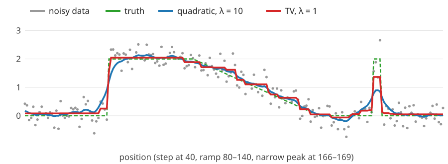

Continuous MRFs: quadratic smoothing and total variation
Image analysis
About this lecture
So far the pixels were binary. Now they are grey values, and the prior says “neighbours have similar values”. How we measure “similar” decides whether edges survive.
Quadratic prior (a Gaussian MRF): one linear system with the graph Laplacian; a low-pass filter; it blurs edges.
Total variation (TV): absolute differences; keeps edges, but makes staircases and shrinks small features.
Huber: in between.
What samples from these priors look like, and where TV comes back in the course.
Slides titled The math give the formulas and proofs; the ideas are complete without them.
From labels to grey values
Observed y_p = x_p + \text{noise}, Gaussian with standard deviation \sigma_n (the camera-noise model of cameranoise/, day 3). We want \mathbf x.
E(\mathbf x) = \underbrace{\tfrac12\sum_p (x_p - y_p)^2}_{\text{stay close to the data}} \;+\; \lambda\underbrace{\sum_{(p,q)}\rho(x_p - x_q)}_{\text{neighbours similar}}
\rho is the penalty on a difference between neighbours: \rho(d) = d^2/2 (quadratic), |d| (TV), or Huber.
\lambda weighs the prior against the data, as before; \lambda = 0 returns \mathbf y.
The noise level is absorbed in \lambda (math slide): more noise, larger \lambda.
Same structure as the binary energy: data term + \lambda\cdot(neighbour penalty). The binary [L_p \ne L_q] is now a function of the size of the difference.
Solution: \hat{\mathbf x} = (0.75, 1.5, 0.75). The peak is halved and spread to its neighbours; the total 0.75 + 1.5 + 0.75 = 3 is preserved.
The math: one sparse linear system
With \rho(d) = d^2/2 the smoothness term is \frac\lambda2\sum_{(p,q)}(x_p - x_q)^2 = \frac\lambda2\mathbf x^\top L\mathbf x, with the graph LaplacianL = D - W (from ncut/, graph-cut day; on a path: 1, 2, …, 2, 1 on the diagonal, -1 beside it). The gradient of E is (\mathbf x - \mathbf y) + \lambda L\mathbf x, so the minimum solves
(I + \lambda L)\,\mathbf x = \mathbf y, \qquad \text{on a path: } \begin{bmatrix} 1 + \lambda & -\lambda & & \\ -\lambda & 1 + 2\lambda & -\lambda & \\ & \ddots & \ddots & \ddots \\ & & -\lambda & 1 + \lambda\end{bmatrix}\mathbf x = \mathbf y.
Tridiagonal in 1D (solved in O(n) by elimination); in 2D a sparse system with 5 non-zeros per row. I + \lambda L is symmetric positive definite: one unique minimum.
Probabilistically: the posterior \propto \exp\big(-\frac1{2\sigma_n^2}\|\mathbf x - \mathbf y\|^2 - \frac{\lambda'}2\mathbf x^\top L\mathbf x\big) is Gaussian (a Gaussian MRF). Multiply by \sigma_n^2: our \lambda = \lambda'\sigma_n^2. Its MAP, its mean and its MPM coincide.
L is the matrix form of the image Laplacian \nabla^2 of kernels/ (with a minus sign).
Quadratic smoothing is a low-pass filter
On a long signal (or a ring) the same weighted averaging happens everywhere: the solution is a convolution of \mathbf y with a fixed kernel. In frequency space each frequency is multiplied by a gain:
Constant signals (\omega = 0) pass unchanged; the fastest oscillation (\omega = \pi, +1, -1, +1, \dots) is divided by 1 + 4\lambda: by 5 at \lambda = 1, by 41 at \lambda = 10.
At \lambda = 10 the gain is \tfrac12 at 0.05 cycles per sample: details shorter than about 20 samples are halved.
An edge contains all frequencies: removing the high ones blurs it. A quadratic prior cannot tell an edge from noise.
The math: the DFT diagonalises I + \lambda L
On a ring of n samples, L is circulant: (L\mathbf x)_p = 2x_p - x_{p-1} - x_{p+1}, a convolution with (-1, 2, -1). Every circulant matrix has the Fourier vectors f_p = e^{i\omega p}, \omega = 2\pi k/n, as eigenvectors (fourier/: the DFT is a change of basis):
So in the Fourier basis (I + \lambda L) is diagonal with entries 1 + \lambda(2 - 2\cos\omega), and solving the system divides each Fourier coefficient by it. For small \omega, 2 - 2\cos\omega \approx \omega^2: gain \approx 1/(1 + \lambda\omega^2), a smooth low-pass.
Why squares blur edges
How expensive is a step of height 3 for each prior?
one jump of 3
three steps of 1
thirty steps of 0.1
quadratic \sum d^2/2
4.5
1.5
0.15
absolute \sum \lvert d\rvert (TV)
3
3
3
The quadratic prior prefers ramps: spreading a jump over many small steps makes it almost free. Edges get smeared.
With absolute values, a monotone transition costs its height, however it is spread. The data term then decides, and the data say “sharp”.
(Prior samples: a quadratic prior is a random walk with normal steps; it has no notion of an edge.)
Moving the left plateau up by \delta and the right one down by \delta costs 2 \cdot 2 \cdot \tfrac12\delta^2 = 2\delta^2 in data and saves 2\delta in TV (3 - 2\delta instead of 3). Best: \delta = 0.5.
\hat{\mathbf x} = (0.5, 0.5, 2.5, 2.5): the step stays sharp, the two plateaus move towards each other by \lambda/\text{width} = 0.5. Energy 0.5 + 2 = 2.5, against 3 for \mathbf y itself.
The quadratic prior on the same data: (0.43, 0.86, 2.14, 2.57): a ramp.
The math: what the TV solution looks like
\rho(d) = |d| is convex but has a kink at 0. At the minimum, for every sample the subgradient contains 0:
Sum this over a plateau (a run of equal values c from a to b): the inner g’s cancel and
\sum_{p=a}^b(y_p - c) = \lambda(g_{a-1} - g_b) \quad\Longrightarrow\quad c = \bar y_{[a,b]} - \frac{\lambda\,(g_{a-1} - g_b)}{b - a + 1}.
Each plateau sits at the mean of its data, shifted by \lambda/\text{width} for each neighbouring plateau that is higher or lower: up from a local minimum, down from a local maximum, 2\lambda/\text{width} for a peak with two lower neighbours; no net shift between a lower and a higher neighbour.
Plateaus merge when the shift would overshoot their neighbour. Exact 1D algorithms find all plateaus directly (Condat, 2013: linear time in practice).
\mathbf y = (0, 3, 0): the peak would drop by 2\lambda and the sides rise by \lambda: (\lambda, 3 - 2\lambda, \lambda) for \lambda \le 1, then all equal to the mean 1.
The price of TV: staircases and lost contrast
Staircasing: a ramp has no single cheapest shape under TV; with noise, the minimum breaks it into flat steps. (The demo’s ramp at \lambda = 3: about a dozen steps.)
Small features lose contrast: a plateau of width w that sticks out on both sides is lowered by about 2\lambda/w. Narrow peaks shrink first, then vanish. \mathbf y = (0, 3, 0) at \lambda = 0.5: (0.5, 2, 0.5); at \lambda = 1: flat (1, 1, 1).
Huber penalty: quadratic for small differences |d| \le \delta (smooth ramps, no stairs), linear for large ones (edges stay): a compromise.
Quadratic versus TV on a noisy profile

Quadratic (\lambda = 10): noise gone, but the step is spread over about 15 samples and the narrow peak drops from 2 to 0.9.
TV (\lambda = 1): the step stays sharp, the flat parts are flat, the ramp becomes a staircase, the peak drops to 1.4.
Error against the truth (RMSE): noisy data 0.29, quadratic 0.24, TV 0.14.
Try it: quadratic, Huber and TV
What do the priors believe?
Draw samples from the priors themselves (no data): p(\mathbf x) \propto e^{-\lambda\sum\rho(x_{p+1} - x_p)} makes each step x_{p+1} - x_p independent: a random walk.
Quadratic: normal steps. TV: Laplace steps \propto e^{-\lambda|d|}: more very small steps and more large jumps than a normal distribution with the same spread.
But TV samples do not look piecewise constant: they are rough random walks too. The flat plateaus of the TV estimate come from taking the minimum (the MAP), not from what the prior’s typical samples look like.
Lesson (as with the exact MAP of the binary model): an estimate can have properties that typical images of the model do not have.
TV elsewhere in the course
Level sets (elective): the Chan–Vese length term is the total variation of an indicator function (a 0/1 image); the binary Ising energy counts the same boundary length on the pixel grid.
Relaxing labels: TV of a soft (0…1) labelling is a convex relaxation of graph-cut segmentation: pointer only.
Deconvolution (day 5): the same quadratic (Tikhonov) and TV priors with a blurring forward model. Here the forward model is the identity.
Radon (algebraic reconstruction) and wavelets (shrinkage) recall TV from here as a regulariser.
Quadratic\rho (Gaussian MRF): one sparse linear system (I + \lambda L)\mathbf x = \mathbf y; a low-pass filter with gain 1/(1 + \lambda(2 - 2\cos\omega)); blurs edges because ramps are cheaper than jumps.
Total variation\rho = |d|: a monotone transition costs its height, so edges stay sharp; plateaus move by \lambda/\text{width}; ramps become staircases, small features lose contrast.
Huber: quadratic for small differences, linear for large ones.
Prior samples are random walks; the piecewise-constant look of TV is a property of the minimum, not of the prior.